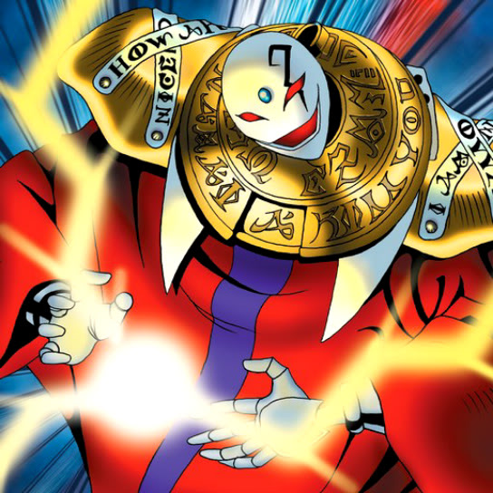

Akakieisu

STATS
ATK: 1000
DEF: 800DECK COST
Deck Cost per Card: 18Fusion List (8 Possible Fusions)
- Akakieisu + Ancient Jar = Ushi Oni
- Akakieisu + Dragon Piper = Ushi Oni
- Akakieisu + Dragon Statue = Blackland Fire Dragon
- Akakieisu + Fiend's Hand = Magical Ghost
- Akakieisu + Fire Reaper = Magical Ghost
- Akakieisu + Mystic Lamp = Lord of the Lamp
- Akakieisu + One-Eyed Shield Dragon = Blackland Fire Dragon
- Akakieisu + Phantom Ghost = Magical Ghost